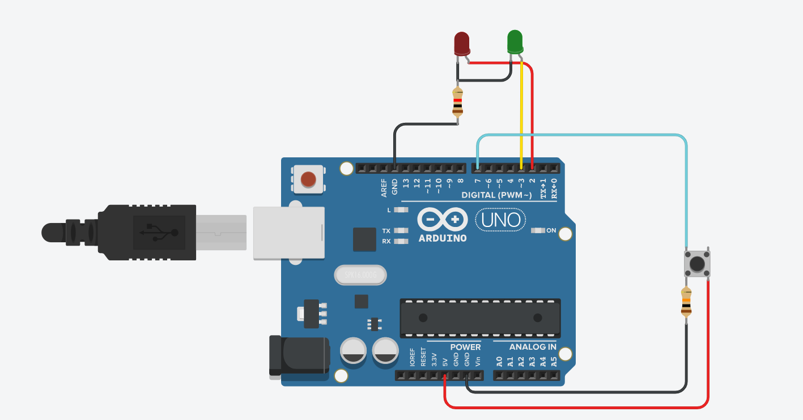

Descripción del proyecto
En este proyecto, se utilizo una placa de arduino uno para prender y apagar dos leds cada un segundo. mientras uno de los leds se enciende, el otro permanece apagado.
Vista del proyecto
En este proyecto se utilizó una placa Arduino Uno para controlar el encendido y apagado alternado de dos LEDs. El comportamiento del sistema se basa en un ciclo de un segundo: mientras uno de los LEDs permanece encendido, el otro permanece apagado, y al cumplirse el tiempo establecido, ambos intercambian su estado.
Volver a la página principal